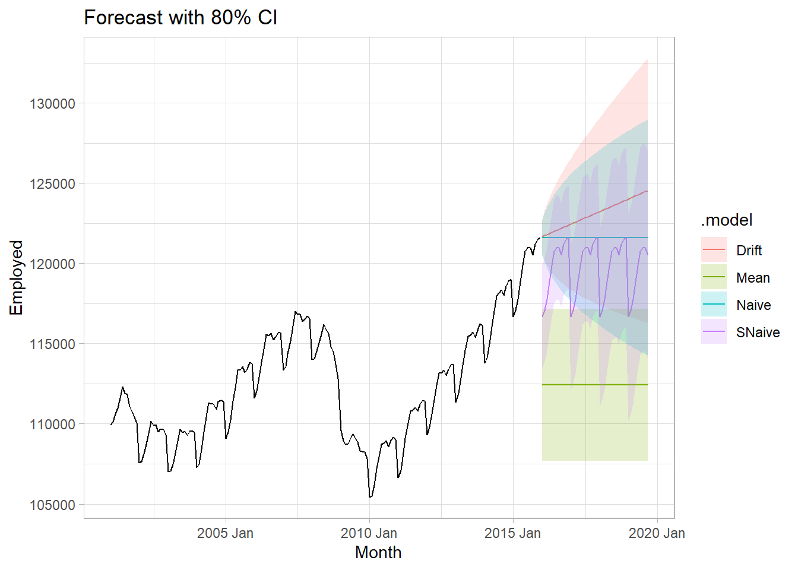
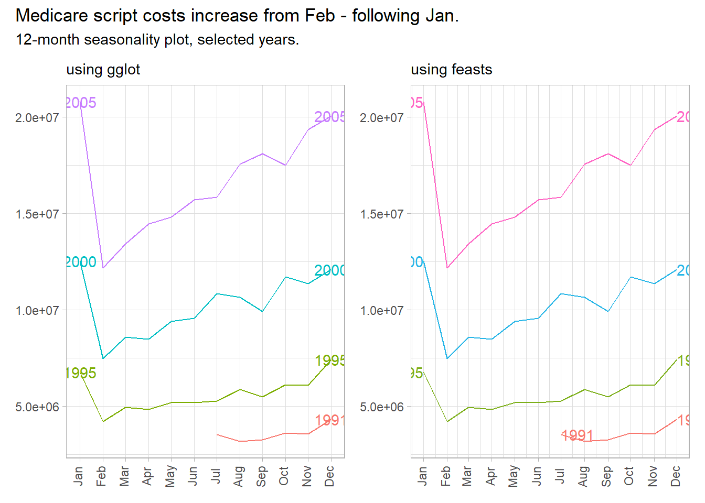

Chapter 1 Basics
This section covers fundamental concepts in time series analysis. There seems to be three modeling paradigms: i) the base R framework using native ts, zoo, and xts objects to model with the forecast package, ii) the tidyverse framework using tsibble objects to model with the fable package, and iii) the tidymodels framework using tibble objects with the timetk package. The base R framework is clunky, so I avoid it. The tidymodels seems to be geared toward machine-learning workflows which are still unfamiliar to me. So most of these notes focus on framework ii, tsibbles with fable.
library(tidyverse)
library(tsibble) # extends tibble to time-series data.
library(feasts) # feature extraction and statistics
library(fable) # forecasting tsibbles.
# library(modeltime) # new time series forecasting framework.
# library(tidymodels)1.1 Common Frameworks
Let’s review those three frameworks briefly. I’ll work with the fpp3::us_employment data of US monthly employment data. There is one row per month and series (969 months x 150 series).
us_employment_tibble <- fpp3::us_employment %>% as_tibble() %>% mutate(Month = ym(Month))
glimpse(us_employment_tibble)
## Rows: 143,412
## Columns: 4
## $ Month <date> 1939-01-01, 1939-02-01, 1939-03-01, 1939-04-01, 1939-05-01,…
## $ Series_ID <chr> "CEU0500000001", "CEU0500000001", "CEU0500000001", "CEU05000…
## $ Title <chr> "Total Private", "Total Private", "Total Private", "Total Pr…
## $ Employed <dbl> 25338, 25447, 25833, 25801, 26113, 26485, 26481, 26848, 2746…Base R
ts is the base R time series package. The ts object is essentially a matrix of observations indexed by a chronological identifier. Because it is a matrix, any descriptive attributes need to enter as numeric, perhaps by one-hot encoding. A ts can only have one row per time observation, and the time series must be regularly spaced (no data gaps).
Define a ts object with ts(x, start, frequency) where frequency is the number of observations in the seasonal pattern: 7 for daily observations with a week cycle; 5 for weekday observations in a week cycle; 24 for hourly in a day cycle, 24x7 for hourly in a week cycle, etc. us_employment_tibble is monthly observations starting with Jan 1939. Had the series started in Feb, you would specify start = c(1939, 2). I filtered the data to the Total Private series to get one row per time observation.
us_employment_ts <-
us_employment_tibble %>%
filter(Title == "Total Private") %>%
arrange(Month) %>%
select(Employed) %>%
ts(start = c(1939, 1), frequency = 12)
glimpse(us_employment_ts)
## Time-Series [1:969, 1] from 1939 to 2020: 25338 25447 25833 25801 26113 ...
## - attr(*, "dimnames")=List of 2
## ..$ : NULL
## ..$ : chr "Employed"zoo and xts
zoo (Zeileis’s ordered observations) has functions similar to those in ts, but also supports irregular time series. A zoo object contains an array of data values and an index attribute to provide information about the data ordering. zoo was introduced in 2014.
xts (extensible time series) extends zoo. xts objects are more flexible than ts objects while imposing reasonable constraints to make them truly time-based. An xts object is essentially a matrix of observations indexed by a time object. Create an xts object with xts(x, order.by) where order.by is a vector of dates/times to index the data. You can also add metadata to the xts object by declaring name-value pairs such as Title below.
library(xts)
us_employment_xts <-
us_employment_tibble %>%
filter(Title == "Total Private") %>%
arrange(Month) %>%
xts(.$Employed, order.by = .$Month, Title = .$Title)
glimpse(us_employment_xts)
## An xts object on 1939-01-01 / 2019-09-01 containing:
## Data: character [969, 4]
## Columns: Month, Series_ID, Title, Employed
## Index: Date [969] (TZ: "UTC")
## xts Attributes:
## $ Title: chr [1:969] "Total Private" "Total Private" "Total Private" "Total Private" ...tsibble
A tsibble, from the package of the same name, is a time-series tibble. Unlike the ts, zoo, and xts objects, a tsibble preserves the time index, making heterogeneous data structures possible. For example, you can re-index a tsibble from monthly to yearly analysis, or include one or more features per time element and fit a linear regression.
A tsibble object is a tibble uniquely defined by key columns plus a date index column. This structure accommodates multiple series, and attribute columns. The date index can be a Date, period, etc. Express weekly time series with yearweek(), monthly time series with yearmonth(), or quarterly with yearquarter().
us_employment_tsibble <- us_employment_tibble %>%
mutate(Month = yearmonth(Month)) %>%
tsibble(key = c(Title), index = Month)
us_employment_tsibble %>% filter(Title == "Total Private") %>% glimpse()## Rows: 969
## Columns: 4
## Key: Title [1]
## $ Month <mth> 1939 Jan, 1939 Feb, 1939 Mar, 1939 Apr, 1939 May, 1939 Jun, …
## $ Series_ID <chr> "CEU0500000001", "CEU0500000001", "CEU0500000001", "CEU05000…
## $ Title <chr> "Total Private", "Total Private", "Total Private", "Total Pr…
## $ Employed <dbl> 25338, 25447, 25833, 25801, 26113, 26485, 26481, 26848, 2746…A tsibble behaves like a tibble, so you can use tidyverse verbs. The only thing that will trip you up is that tsibble objects are grouped by the index, so group_by() operations implicitly include the index. Use index_by() if you need to summarize at a new time level.
# Group by Quarter implicitly includes the Month index column. Don't do this.
us_employment_tsibble %>%
group_by(Quarter = quarter(Month), Title) %>%
summarize(Employed = sum(Employed, na.rm = TRUE)) %>%
tail(3)
# Instead, change the index aggregation level with index_by() and group with
# either group_by() or group_by_key()
us_employment_tsibble %>%
index_by(Quarter = ~ quarter(.)) %>%
group_by_key(Title) %>%
summarise(Employed = sum(Employed, na.rm = TRUE)) %>%
tail(3)1.2 Fitting Models
If you are fitting an explanatory model, the workflow will be fitting, verifying assumptions, then summarizing the parameters. If your are fitting a predictive model, your workflow will be comparing models with cross-validation using a hold-out data set, then making predictions.
Let’s continue working with the us_employment data set and use just the Total Private series. We’ll split the data into training and testing for predictive modeling.
us_employment_full <- us_employment_tsibble %>%
filter(Title == "Total Private", year(Month) >= 2000)
us_employment_train <- us_employment_full %>% filter(year(Month) <= 2015)
us_employment_test <- us_employment_full %>% filter(year(Month) > 2015)Fit a naive model (projection of last value) to Google’s Close from 2015, then predict values from Jan 2016. We’ll create an 80:20 train-test split (test should be ~20% or at least as long as the anticipated forecast.).
train_fit <-
us_employment_train %>%
model(
Mean = MEAN(Employed),
Naive = NAIVE(Employed),
SNaive = SNAIVE(Employed),
Drift = RW(Employed ~ drift())
)
train_fcast <-
train_fit %>%
forecast(new_data = us_employment_test) %>%
# Make an 80% CI from the distribution.
mutate(
mu = map_dbl(Employed, ~unlist(.) %>% .["mu"]),
sigma = map_dbl(Employed, ~unlist(.) %>% .["sigma"]),
lcl = qnorm(.10, mu, sigma),
ucl = qnorm(.90, mu, sigma)
) %>%
as_tibble()The autoplot() and autolayer() functions take a lot of the headache out of plotting the results, especially since forecast() tucks away the confidence intervals in a distribution list object.
bind_rows(
us_employment_train,
us_employment_test
) %>%
as_tibble() %>%
ggplot(aes(x = Month)) +
geom_line(aes(y = Employed), color = "black", size = 1) +
geom_line(data = train_fcast, aes(y = mu, color = .model), size = 1) +
geom_ribbon(data = train_fcast,
aes(ymin = lcl, ymax = ucl, fill = .model, color = .model),
alpha = .2) +
labs(title = "Forecast with 80% CI", x = NULL, y = NULL)## Warning: Using `size` aesthetic for lines was deprecated in ggplot2 3.4.0.
## ℹ Please use `linewidth` instead.
## This warning is displayed once every 8 hours.
## Call `lifecycle::last_lifecycle_warnings()` to see where this warning was
## generated.
1.3 Evaluating Fit
Evaluate the model fit with residuals diagnostics.1 broom::augment() adds three columns to the model cols: .fitted, .resid, and .innov. .innov is the residual from the transformed data (if no transformation, it just equals .resid).
Innovation residuals should be independent random variables normally distributed with mean zero and constant variance (the normality and variance conditions are only required for inference and prediction intervals). Happily, feasts has just what you need.

The autocorrelation plot violates the independence assumption. The histogram plot tests normality. The residuals plot tests mean zero and constant variance. You can carry out a portmanteau test on the autocorrelation assumption. Two common tests are the Box-Pierce and the Ljung-Box. These tests check the likelihood of a combination of autocorrelations at once, without testing any one correlation, kind of like an ANOVA test. The Ljung-Box test statistic is a sum of squared \(k\)-lagged autocorrelations, \(r_k^2\),
\[Q^* = T(T+2) \sum_{k=1}^l(T-k)^{-1}r_k^2.\]
The test statistic has a \(\chi^2\) distribution with \(l - K\) degrees of freedom (where \(K\) is the number of parameters in the model). Use \(l = 10\) for non-seasonal data and \(l = 2m\) for seasonal data. If your model has no explanatory variables, \(K = 0.\) Reject the no-autocorrelation (i.e., white noise) assumption if p < .05.
## # A tibble: 4 × 4
## Title .model lb_stat lb_pvalue
## <chr> <chr> <dbl> <dbl>
## 1 Total Private Drift 44.1 0.00000311
## 2 Total Private Mean 1128. 0
## 3 Total Private Naive 44.1 0.00000311
## 4 Total Private SNaive 1278. 01.4 Evaluating Accuracy
Some forecasting methods are extremely simple and surprisingly effective. The mean method projects the historical average, \(\hat{y}_{T+h|T} = \bar{y}.\) The naive method projects the last observation, \(\hat{y}_{T+h|T} = y_T.\) The seasonal naive method projects the last seasonal observation, \(\hat{y}_{T+h|T} = y_{T+h-m(k+1)}.\) The drift method projects the straight line from the first and last observation, \(\hat{y}_{T+h|T} = y_T + h\left(\frac{y_T - y_1}{T-1}\right).\)
Evaluate the forecast accuracy with the test data (aka, “hold-out set”, and “out-of-sample data”). The forecast error is the difference between the observed and forecast value, \(e_{T+h} = y_{T+h} - \hat{y}_{t+h|T}.\) Forecast errors differ from model residuals in that they come from the test data set and because forecast values are usually multi-step forecasts which include prior forecast values as inputs.
The major accuracy benchmarks are:
- MAE. Mean absolute error, \(mean(|e_t|)\)
- RMSE. Root mean squared error, \(\sqrt{mean(e_t^2)}\)
- MAPE. Mean absolute percentage error, \(mean(|e_t / y_t|) \times 100\)
- MASE. Mean absolute scaled error, \(MAE/Q\) where \(Q\) is a scaling constant calculated as the average one-period change in the outcome variable (error from a one-step naive forecast).
The MAE and RMSE are on the same scale as the data, so they are only useful for comparing models fitted to the same series. MAPE is unitless, but does not work for \(y_t = 0\), and it assumes a meaningful zero (ratio data). MASE is most useful for comparing data sets of different units.
Use accuracy() to evaluate a model.
train_fit %>%
forecast(new_data = us_employment_test) %>%
fabletools::accuracy(data = us_employment_test) %>%
select(.model, RMSE, MAE, MAPE, MASE)## # A tibble: 4 × 5
## .model RMSE MAE MAPE MASE
## <chr> <dbl> <dbl> <dbl> <dbl>
## 1 Drift 2809. 2374. 1.88 NaN
## 2 Mean 13091. 12787. 10.2 NaN
## 3 Naive 4514. 3831. 3.02 NaN
## 4 SNaive 5961. 5435. 4.31 NaNTime series cross-validation is a better way to evaluating a model. It breaks the dataset into multiple training sets by setting a cutoff at varying points and setting the test set to a single step ahead of the horizon. Function stretch_tsibble() creates a tsibble of initial size .init and appends additional data sets of increasing size .step.
us_employment_full %>%
stretch_tsibble(.init = 3, .step = 1) %>%
# Fit a model for each key
model(
Mean = MEAN(Employed),
Naive = NAIVE(Employed),
SNaive = SNAIVE(Employed),
Drift = RW(Employed ~ drift())
) %>%
forecast(h = 12) %>%
fabletools::accuracy(data = us_employment_test)## # A tibble: 4 × 11
## .model Title .type ME RMSE MAE MPE MAPE MASE RMSSE ACF1
## <chr> <chr> <chr> <dbl> <dbl> <dbl> <dbl> <dbl> <dbl> <dbl> <dbl>
## 1 Drift Total Private Test 694. 1738. 1410. 0.546 1.13 0.627 0.770 0.826
## 2 Mean Total Private Test 11961. 12162. 11961. 9.52 9.52 5.32 5.39 0.825
## 3 Naive Total Private Test 1169. 2023. 1685. 0.925 1.34 0.749 0.896 0.795
## 4 SNaive Total Private Test 2267. 2274. 2267. 1.81 1.81 1.01 1.01 0.6411.5 Model Selection
Let’s compare the performance of a few candidate models for the base R datasets::WWWusage data set of internet usage.
datasets::WWWusage %>%
as_tsibble() %>%
ggplot(aes(x = index, y = value)) +
geom_line() +
theme_light() +
labs(title = "Internet usage by minute", x = NULL, y = "Users")
We will use time-series cross-validation. The data set has 100 rows. Function stretch_tsibble(.init, .step) takes a tsibble and creates a new tsibble for cross validation. First stretch_tsibble() takes the first .init rows from the tsibble and adds a new column .id with value 1. Then it takes the first .init + .step rows from the tsibble and assigns .id value 2. It continues like this, creating longer and longer tsibbles until it cannot create a longer one from the original tsibble. Finally, it appends these together into one long tsibble with .id added to the index. Normal cross-validation repeatedly fits a model to the data set with one of the rows left out. Since model() fits a separate model per index value, creating this long tsibble effectively accomplishes the same thing. Note the fundamental difference here though: time series CV does not leave out single values from points along in the time series. It leaves out all points after a particular point along the time series - each sub-data set starts at the beginning and is uninterrupted until reaching the varying end points. Let’s take a look at the CV data set before using it to fit the models.
www_cv <- datasets::WWWusage %>%
as_tsibble() %>%
stretch_tsibble(.init = 10, .step = 1)
# 10 rows + 11 rows + ... + 100 rows = 5,005 rows:
nrow(www_cv)
## [1] 5005
# .id added to index
head(www_cv)
## # A tsibble: 6 x 3 [1]
## # Key: .id [1]
## index value .id
## <dbl> <dbl> <int>
## 1 1 88 1
## 2 2 84 1
## 3 3 85 1
## 4 4 85 1
## 5 5 84 1
## 6 6 85 1
# 91 index values
summary(www_cv$.id)
## Min. 1st Qu. Median Mean 3rd Qu. Max.
## 1.00 42.00 62.00 58.55 78.00 91.00Fit four models to the 91 data sets to compare the accuracy. Here’s the full code.
datasets::WWWusage %>%
as_tsibble() %>%
stretch_tsibble(.init = 10, .step = 1) %>%
model(
OLS = TSLM(value ~ index),
`Simple Exponential Smoothing` = ETS(value ~ error("A") + trend("N") + season("N")),
`Holt's method` = ETS(value ~ error("A") + trend("A") + season("N")),
`Holt's method (damped)` = ETS(value ~ error("A") + trend("Ad") + season("N"))
) %>%
forecast(h = 1) %>%
accuracy(data = as_tsibble(datasets::WWWusage))## Warning: The future dataset is incomplete, incomplete out-of-sample data will be treated as missing.
## 1 observation is missing at 101## # A tibble: 4 × 10
## .model .type ME RMSE MAE MPE MAPE MASE RMSSE ACF1
## <chr> <chr> <dbl> <dbl> <dbl> <dbl> <dbl> <dbl> <dbl> <dbl>
## 1 Holt's method Test 0.0610 3.87 3.17 0.244 2.38 0.701 0.668 0.296
## 2 Holt's method (damp… Test 0.288 3.69 3.00 0.347 2.26 0.663 0.636 0.336
## 3 OLS Test -6.01 38.7 31.4 -10.8 24.8 6.94 6.67 0.974
## 4 Simple Exponential … Test 1.46 6.05 4.81 0.904 3.55 1.06 1.04 0.803The best model as measured by RMSE was Holt’s method with damping. OLS was pretty bad. Let’s fit it to the whole data set and forecast future periods.
www_fit <- datasets::WWWusage %>%
as_tsibble() %>%
model(holt_d = ETS(value ~ error("A") + trend("Ad") + season("N")))
www_fit %>% report()## Series: value
## Model: ETS(A,Ad,N)
## Smoothing parameters:
## alpha = 0.9999
## beta = 0.9966439
## phi = 0.814958
##
## Initial states:
## l[0] b[0]
## 90.35177 -0.01728234
##
## sigma^2: 12.2244
##
## AIC AICc BIC
## 717.7310 718.6342 733.3620This time the damping parameter is very small (0.815), resulting in a quick return to the horizontal.
www_fc <- www_fit %>%
forecast(h = 10) %>%
mutate(sigma = map_dbl(value, ~unlist(.) %>% .["mu"]),
ci_025 = qnorm(.025, .mean, sigma),
ci_975 = qnorm(.975, .mean, sigma))
www_fit %>%
augment() %>%
ggplot(aes(x = index)) +
geom_line(aes(y = value)) +
geom_line(aes(y = .fitted), color = "goldenrod") +
geom_line(data = www_fc, aes(y = .mean), color = "goldenrod") +
geom_ribbon(data = www_fc, aes(ymin = ci_025, ymax = ci_975), alpha = 0.2, fill = "goldenrod") +
theme_light() +
labs(title = "Internet usage by Minute.",
subtitle = "Holt's method with damping. Shaded are is 95% prediction interval.",
x = NULL)## Warning: The output of `fortify(<fable>)` has changed to better suit usage with the ggdist package.
## If you're using it to extract intervals, consider using `hilo()` to compute intervals, and `unpack_hilo()` to obtain values.
## The output of `fortify(<fable>)` has changed to better suit usage with the ggdist package.
## If you're using it to extract intervals, consider using `hilo()` to compute intervals, and `unpack_hilo()` to obtain values.
Residuals and errors are not the same thing. The residual is the difference between the observed and fitted value in the training data set. The error is the difference between the observed and fitted value in the test data set.↩︎